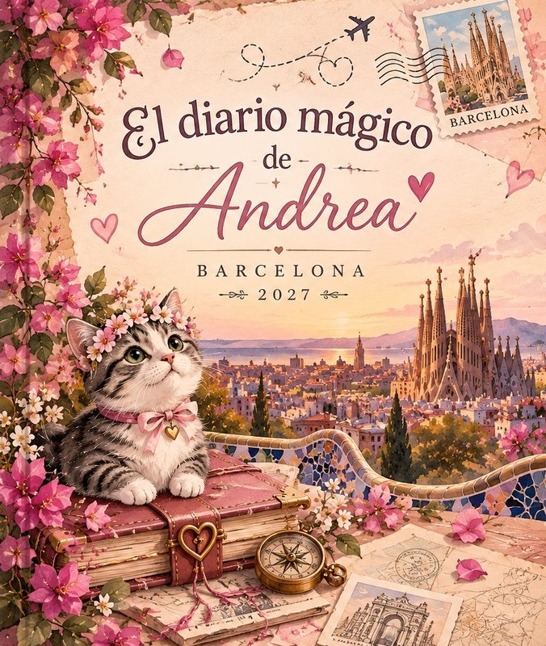

ESPACIO PERSONAL
Mi alcancía · Barcelona 2027
Un sueño que va tomando forma.
Registra tus ahorros y consulta cuánto falta para completar tu meta.
Mi progresoMeta de viaje
Mi meta
Registrar movimiento
Mis movimientos
Cargando movimientos…
Preferencias del diario
Configuración
Administra tus datos y conserva una copia de tus avances. El guardado actual funciona en este dispositivo; la sincronización entre dispositivos requiere conectar la base de datos compartida.
La copia permite pasar tus avances manualmente a otro dispositivo.
Privacidad
El acceso al diario está protegido con contraseña. No compartas la clave con otras personas.
Bienvenida · Antes de comenzar
Una aventura que es solo tuya.
Este pequeño libro es para acompañarte antes, durante y después de Barcelona. Aquí encontrarás lugares por descubrir, historias, páginas libres y algunas palabras que Isaac dejó para ti. Ve a tu ritmo. No hay una forma correcta de vivir un viaje.
Una nota para ti
Que cada calle te regale una sorpresa, que encuentres belleza en los detalles pequeños y que, cuando cierres este diario, tengas un montón de historias que sean solamente tuyas.
Con cariño, Isaac ♡
Índice del diario
Elige por dónde empezar.
Puedes recorrer las páginas en orden o abrir directamente el capítulo que te apetezca.
Capítulo 01 · Preparativos
Antes de abrir la puerta.
Prepara lo importante con tiempo. Esta lista reúne la maleta y los documentos para viajar a Barcelona en febrero de 2027. Marca cada tarea cuando esté lista; el progreso se guarda en este dispositivo.
Mi maleta
0 de 7 listos
Documentos para entrar a España
La siguiente información supone que Andrea viaja con pasaporte mexicano por turismo, por menos de 90 días. Si viaja con otra nacionalidad o por otro motivo, hay que revisar requisitos distintos.
01 · Pasaporte mexicano
Debe estar vigente y en buen estado. La norma de entrada Schengen exige que haya sido expedido dentro de los 10 años anteriores a la entrada y que siga vigente al menos 3 meses después de la fecha prevista de salida del espacio Schengen. La Secretaría de Relaciones Exteriores de México recomienda viajar con al menos 6 meses de vigencia; para evitar problemas con aerolíneas o escalas, lo prudente es que tenga 6 meses o más al iniciar el viaje.
Dónde obtenerlo o renovarlo: Secretaría de Relaciones Exteriores (SRE), con cita en citas.sre.gob.mx ↗. Consulta requisitos y costos en Pasaporte mexicano · SRE ↗. La vigencia que se expide depende de la edad y del tipo de trámite; revisa la fecha impresa en el documento.
02 · Visa y autorización ETIAS
Las personas mexicanas no necesitan visa Schengen para una visita turística o familiar de hasta 90 días dentro de cualquier periodo de 180 días. ETIAS es una autorización electrónica distinta de una visa. Antes de viajar, consulta si ya está operativa y si aplica a la fecha del vuelo; si es obligatoria, solicítala únicamente en el portal oficial y vincúlala al mismo pasaporte con el que viajará.
Dónde comprobarlo: portal oficial ETIAS de la Unión Europea ↗. No pagues a páginas intermediarias.
03 · Vuelo de ida y regreso
Ten a la mano la reservación completa con nombre idéntico al pasaporte, fechas cerradas y comprobante del regreso o continuación del viaje. Guarda el correo de confirmación y una copia sin conexión.
Dónde obtenerlo: en la aerolínea o agencia donde se compre el boleto. No se tramita ante una autoridad migratoria.
04 · Alojamiento y carta de invitación
Como se hospedará con amistades, la persona anfitriona que vive en España debe solicitar la carta de invitación ante la Policía Nacional de su localidad. La carta debe cubrir las fechas reales y señalar la dirección donde se alojará Andrea. La autoridad puede pedir documentos que acrediten la identidad y disponibilidad de la vivienda, y la expedición tiene una tasa. La anfitriona debe iniciar el trámite con anticipación: no es un documento que Andrea pueda descargar o emitir por su cuenta desde México.
Dónde tramitarla: la persona anfitriona consulta la comisaría competente y el procedimiento de Policía Nacional · Extranjería ↗. Andrea debe viajar con el original o el documento que indique la autoridad emisora, además de los datos de contacto de quien la recibe. La carta acredita alojamiento, pero no sustituye la prueba de fondos ni garantiza la entrada.
05 · Dinero y medios económicos
España puede pedir que se demuestre dinero suficiente para la estancia y el regreso. Como referencia, el importe oficial publicado para 2026 es de 121,10 € por persona y día, con un mínimo de 1.098,90 € por persona. La cifra puede cambiar para 2027. La carta de invitación y que algunas comidas estén cubiertas pueden influir en la valoración, pero no eliminan automáticamente este requisito.
Dónde obtener los comprobantes: en el banco donde Andrea tenga su cuenta: estados de cuenta recientes, saldo disponible y tarjeta bancaria habilitada para uso internacional. Lleva también la tarjeta física y, si corresponde, efectivo. Revisa la cifra vigente en el Ministerio del Interior de España ↗ antes de viajar.
06 · Seguro médico y medicamentos
Para una turista mexicana exenta de visa, el seguro de viaje no suele ser un requisito general de entrada, pero es muy recomendable: la atención médica privada y una repatriación pueden ser costosas. Contrátalo antes de salir, para que cubra todas las fechas del viaje y los países de escala. Si lleva medicamentos sujetos a receta o control, debe consultar las reglas de transporte y llevar la receta o informe médico.
Dónde obtenerlo: con una aseguradora o proveedor de asistencia de viaje. Compara cobertura médica, urgencias, hospitalización, repatriación, exclusiones y deducible. Descarga la póliza y el teléfono de asistencia.
07 · Copias y registro de viaje
Guarda copias del pasaporte, vuelos, carta de invitación, seguro y reservas en el móvil sin conexión y con una persona de confianza. La SRE recomienda registrar el viaje en SIRME para recibir información y facilitar asistencia consular en caso de emergencia.
Dónde hacerlo: SIRME · Secretaría de Relaciones Exteriores ↗. Es un registro gratuito y voluntario; no sustituye documentos de entrada.
Fuentes y requisitos consultados en octubre de 2026. Revisa de nuevo las condiciones oficiales unos meses antes del vuelo y justo antes de salir; la decisión final de admisión corresponde a las autoridades fronterizas.
0 documentos listos
Consejo de Bicha: no llenes cada minuto. A veces el mejor recuerdo aparece cuando no estás buscando nada.
Capítulo 02 · Mi presupuesto
Un viaje bonito, sin perder de vista los gastos.
Una referencia para organizar el dinero durante cuatro días. El alojamiento y los vuelos no están incluidos. Como algunas comidas estarán cubiertas por tus anfitriones, el gasto real puede ser menor.
Presupuesto orientativo por persona
Plan sencillo: 220–300 €
Comidas sencillas, transporte público y algunas entradas.
Con más comodidad: 320–480 €
Más visitas, cafés, comidas variadas y algún capricho.
Son estimaciones iniciales, no precios garantizados. Conviene revisar tarifas, reservas y transporte antes del viaje.
Mi pequeño control de gastos
Anota aquí cuánto quieres destinar a cada cosa. Los importes se pueden cambiar.
Total planeado: 0 €
Capítulo 02 · Documentación
Todo en orden para cruzar el cielo.
Una lista práctica para preparar el viaje a Barcelona en febrero de 2027. Está pensada para una viajera con pasaporte mexicano que visita España por turismo. Marca cada documento cuando esté listo.
Antes de empezar
Esta guía parte del supuesto de que Andrea viajará con pasaporte mexicano, por turismo y por menos de 90 días. Si su nacionalidad, tipo de pasaporte o motivo del viaje es distinto, los requisitos pueden cambiar.
Las reglas de entrada pueden actualizarse antes de febrero de 2027. Revisa los requisitos oficiales unos meses antes y nuevamente cerca de la salida.
01 · Identidad y entrada
02 · Vuelos y salida
03 · Alojamiento con amistades
La carta de invitación acredita el alojamiento; no sustituye la prueba de medios económicos ni garantiza por sí sola la entrada.
04 · Medios económicos
La cantidad exigible puede cambiar cada año y depende de la duración y circunstancias del viaje. Consulta el importe oficial vigente antes de volar.
05 · Salud y respaldo
06 · Antes de salir de casa
Fuentes oficiales para revisar
Consulado de España en México ↗
Policía Nacional: carta de invitación ↗
SIRME · Secretaría de Relaciones Exteriores ↗
Esta lista ayuda a organizarse, pero no sustituye la revisión de requisitos oficiales ni la decisión de las autoridades fronterizas.
0 documentos listos
Capítulo 02 · Documentación
Todo en orden para cruzar el cielo.
Lista para preparar el viaje a Barcelona en febrero de 2027. Está pensada para una viajera con pasaporte mexicano que visita España por turismo durante menos de 90 días. Marca cada tarea cuando esté lista.
Importante
Esta guía parte del supuesto de que Andrea viajará con pasaporte mexicano. Si su nacionalidad, tipo de pasaporte o motivo del viaje es distinto, los requisitos pueden cambiar. Revisa las reglas oficiales antes de viajar: pueden actualizarse antes de febrero de 2027.
01 · Identidad y entrada
02 · Vuelos y salida
03 · Alojamiento con amistades
La carta acredita el alojamiento; no sustituye la prueba de medios económicos ni garantiza por sí sola la entrada.
04 · Medios económicos
El importe exigible puede cambiar cada año y depende de la duración y circunstancias del viaje. Consulta la cantidad oficial vigente antes de volar.
05 · Salud y respaldo
06 · Antes de salir
Fuentes oficiales
Consulado de España en México ↗
Policía Nacional: extranjería y carta de invitación ↗
SIRME · Secretaría de Relaciones Exteriores ↗
Esta lista sirve para organizarse; no sustituye la revisión de requisitos oficiales ni la decisión de las autoridades fronterizas.
0 documentos listos
Capítulo 04 · Barcelona histórica
Piedra, luz e historias.
Unas paradas para conocer la ciudad con calma. Consulta horarios y tarifas oficiales antes de ir; los precios pueden cambiar.
Barri Gòtic
Callejuelas medievales, el Pont del Bisbe, la Plaça del Rei y rincones escondidos. Ideal para caminar sin prisa y mirar hacia arriba.
Entrada libre para recorrer las calles.
Santa Maria del Mar y El Born
Una basílica gótica y un barrio lleno de historia, cafés y pequeñas tiendas.
Sagrada Família
Una visita que conviene reservar con antelación en su web oficial: sagradafamilia.org.
Lugares para descubrir
Marca los lugares que visites. Los precios son orientativos; consulta siempre la web oficial antes de desplazarte.
Capítulo 05 · Rincones y descubrimientos
Deja que la ciudad te sorprenda.
No todo tiene que ser una visita famosa. Regálate un rato en una plaza, entra a una librería, descubre una fachada bonita o siéntate a observar la vida pasar.
Una pequeña misión
Encuentra un detalle que casi nadie mire: una puerta antigua, un balcón, una baldosa, una sombra bonita. Guárdalo en tu memoria.
Bicha recomienda: caminar con curiosidad y descansar cuando el cuerpo lo pida.
Capítulo 06 · Cartas para el corazón
Abre una cuando lo necesites.
Estas cartas están pensadas para acompañarte en momentos distintos. Los mensajes personales pueden editarse cuando Isaac los escriba.
Si hoy extrañas tu hogar, respira. Estás viviendo algo nuevo y puedes disfrutarlo sin dejar de extrañar lo que amas. Estoy orgulloso de ti y te llevo conmigo, incluso a la distancia. ♡
No tienes que poder con todo ni aprovechar cada segundo. Descansa, ve despacio y recuerda lo capaz que eres. Un día difícil no arruina una aventura.
Aunque hoy estemos lejos, no estás sola en lo que sientes. Puedes escribirme, llamarme o simplemente tomarte un momento para ti. Te quiero.
Ojalá pudiera escuchar cada detalle de ese día. Guárdalo bien, celébralo y disfruta esa felicidad. Me encanta imaginarte descubriendo cosas nuevas.
No tienes que seguir caminando para que el día valga la pena. Busca un lugar cómodo, toma algo calentito y descansa. Cuidarte también forma parte del viaje.
Qué bonito que algo nuevo te haga brillar los ojos. Disfrútalo muchísimo y, cuando quieras, cuéntame todo. Quiero conocer Barcelona a través de tus historias.
Volver no significa que la aventura termine. Todo lo que descubriste ahora forma parte de ti. Ojalá regreses llena de historias y con ganas de volver a sorprenderte.
La distancia no cambia lo que siento por ti. Este diario es una forma pequeña de acompañarte, de recordarte que pienso en ti y que deseo que vivas algo precioso. Te quiero.
Nota: estos son textos iniciales editables; Isaac podrá personalizarlos con sus propias palabras.
Capítulo 07 · Mis páginas libres
Este espacio es tuyo.
Dibuja algo que viste, garabatea mientras tomas un café o deja aquí una idea. No tiene que quedar perfecto.
El dibujo se descarga como imagen PNG en este dispositivo.
Capítulo 08 · Al volver
La aventura se queda contigo.
Cuando regreses, este libro seguirá aquí para que recuerdes lo que te hizo sonreír, lo que aprendiste y los pequeños momentos que hicieron especial el viaje.
Una última página
No importa cuántas ciudades conozcas: ojalá nunca pierdas esa parte de ti que se emociona al descubrir algo nuevo.
Con todo mi cariño, Isaac ♡